追光的藻，给了神经细胞一个开关Light-seeking algae gave us a switch for nerve cells
Official citation · 官方授奖引文“for their discoveries concerning light-gated ion channels and optogenetics”表彰他们关于光门控离子通道与光遗传学的发现。（颁奖机构：卡罗林斯卡学院）
In one line一句话
他们从一种会「追光」的单细胞绿藻身上，找到了一枚能被光打开的蛋白通道，再把它装进神经细胞。从此，研究人员可以用一束蓝光，点名开关某一种神经细胞，看清它到底在管什么。
A light-sensitive protein found in a single-celled alga became a switch that lets researchers turn individual nerve cells on and off — with nothing but blue light.
The chain因果链：一步步是怎么走过来的
- 1990 年代初，Hegemann 问了一个简单问题：单细胞绿藻 Chlamydomonas 为什么能那么快地朝光游？
- 他用电极测：光打到藻的「眼点」后，0.5 毫秒就出电信号。而人眼从感光到出信号，至少要 10 毫秒——慢了二十多倍。
- 他猜：藻里可能是一个蛋白同时干两件事，既感光、又是离子通道。当时没人见过这种通道，同行普遍怀疑。
- 藻的感光蛋白一离开活细胞就散架。等到日本团队测出藻的基因图谱，Hegemann 从几千个基因里挑出两个候选，交给同事 Nagel。
- Nagel 把这两个基因分别注射进青蛙卵细胞，让卵细胞大量生产这种蛋白、放到膜上。结果确认：照光就开——channelrhodopsin-1 / 2（通道视紫红质）被发现（2002、2003 年发表）。
- 2005 年，Deisseroth 要来 chR2 的基因，放进培养皿里的大鼠神经细胞。蓝光一照，神经细胞立刻放电，而且信号能传给下一个神经细胞。
- 2007 年，他把光纤穿过小鼠颅骨的小孔照进运动皮层：光一开，胡须就动。同年另一个实验里，用光照射一类控制清醒的神经细胞，睡着的鼠被「叫醒」了。
- 2012 年，他与利根川进（1987 年诺贝尔奖得主）一起激活小鼠的记忆印迹：让它在安全环境里表现出恐惧——第一次证明「哪些神经细胞是一段记忆的必需条件」。
Official illustrations官方插图（5 张 · 点图可看官方原图）
Illustrations: The Nobel Committee for Physiology or Medicine / Mattias Karlén

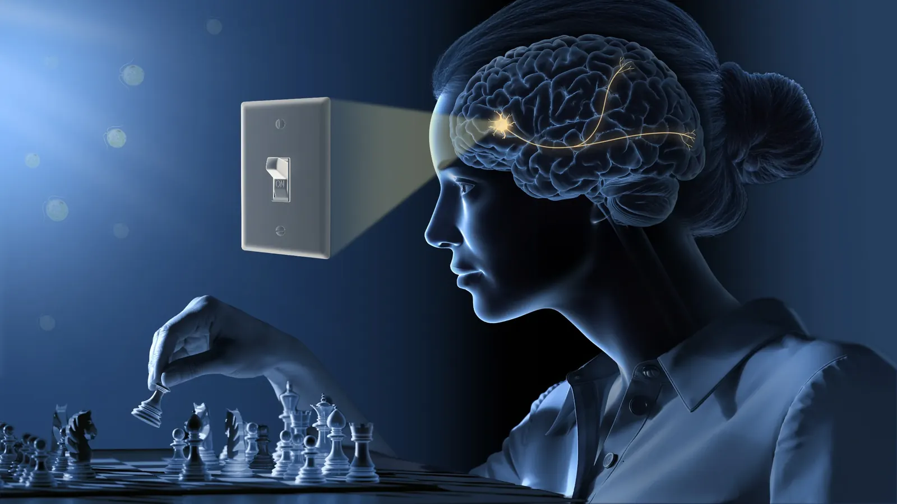

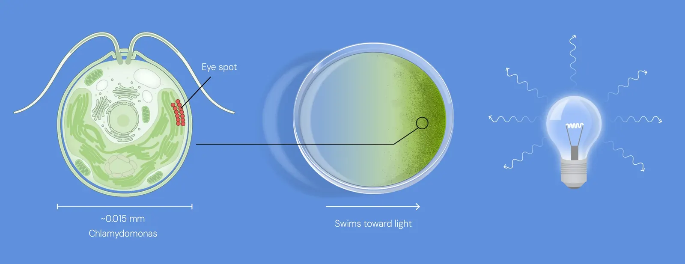

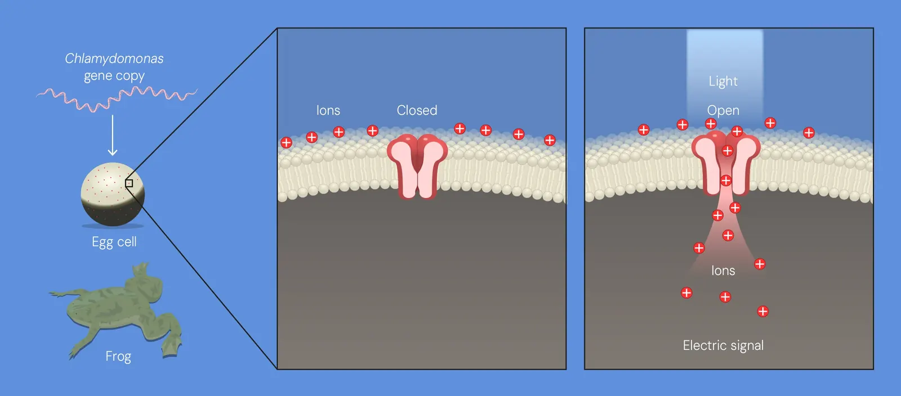

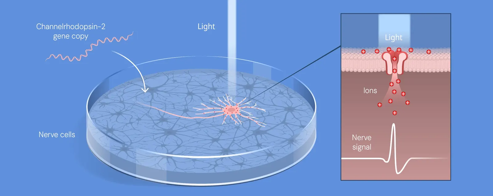

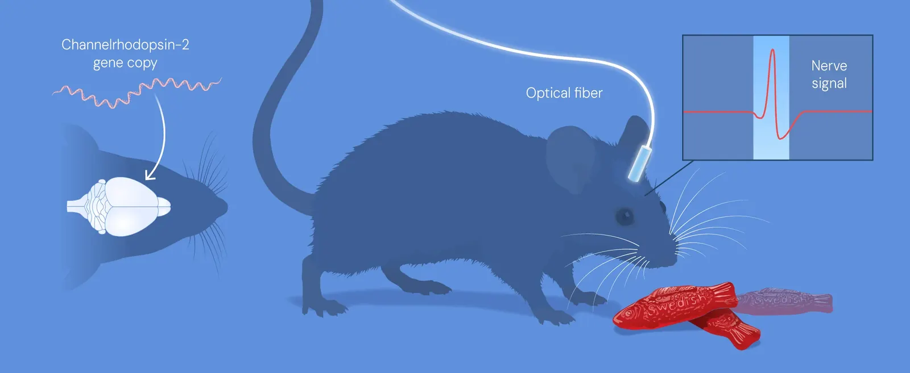
展开进阶图表 · 4 张（进一步看实验怎么做、数据长什么样）

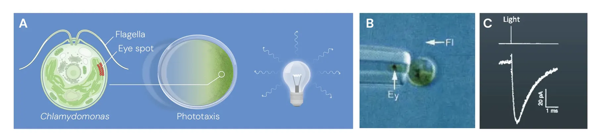

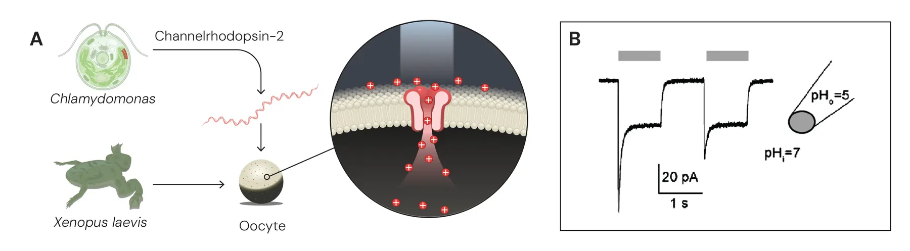

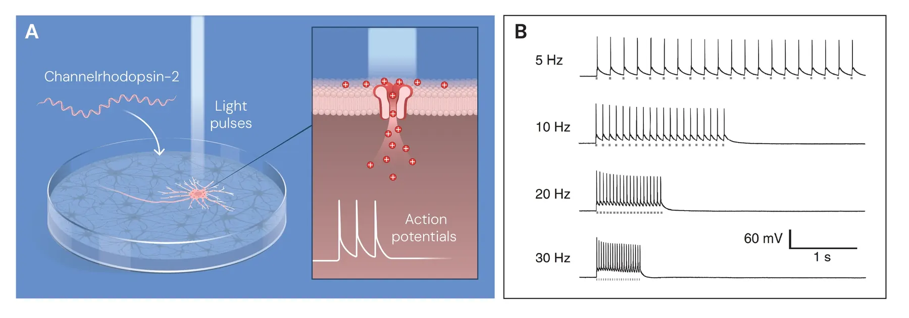

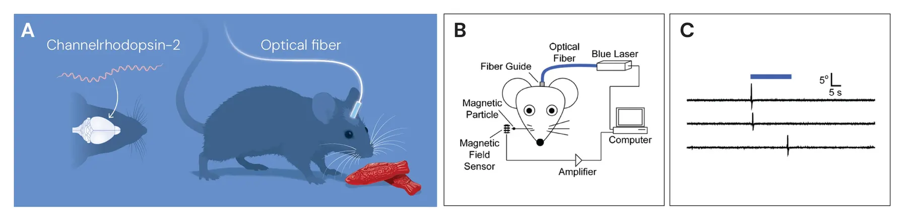
The story发现的故事（10 节）
A light-sensitive algal protein energised neuroscience序章：一种对光敏感的藻类蛋白，给神经科学通了电
看懂大脑如何形成记忆、情绪和行为，是研究者做了很久的一个梦。今年这三位获奖人的发现，让这件事第一次变得可以「动手」：在一只活着的动物脑子里，把某一种神经细胞单独打开或关掉。这套方法叫光遗传学，现在全世界的实验室都在用它撬开大脑的秘密。
1932 年，作家伍尔夫在给朋友的信里写：「我自己的大脑，是我最说不清的机器——它一直在嗡嗡、呼啸、俯冲，然后陷进泥里。为什么？这份热情到底是什么？」她问的这些问题，今天仍然有人接着问：一个只有大约 1.3 公斤重的器官，凭什么装得下童年的记忆、白日梦和创造力？又凭什么同时管着心跳的节拍、呼吸的节奏和睡眠周期？
20 世纪，研究者搞清了大范围的分工：哪个脑区管哪种功能。但这个精度不够——它没法证明「就是这一类神经细胞导致了这个感觉或这个行为」。所以当时的大脑图景，像一张对焦失败的模糊照片。
最早梦想做出更精密工具的人里，有一位是弗朗西斯·克里克（1962 年诺贝尔奖得主）。在 1953 年解开 DNA 双螺旋之后的几十年里，他转头研究意识的机制。他想：能不能只激活脑子里的单个神经细胞？神经细胞里的信号快得惊人，要跟上这个速度，他觉得最理想的工具大概是光。（官方配图 1 说的就是这件事。）克里克自己承认这想法听着像天方夜谭——但也许不是做不到。
Hegemann investigates how a swimming alga senses light第一章：一种会追光的藻，和它身上的那个橙点
故事的起点，是一个人的好奇心。1990 年代初，黑格曼在马丁斯里德的马普生物化学研究所问了一个很朴素的问题：单细胞的衣藻（Chlamydomonas），怎么能那么快地反应光？
衣藻出名的本事是「追着光游泳」。把它搅进培养皿，液体呈淡淡的绿色；这时候从侧面打一束光，绿色会整体朝光源挪过去——那些肉眼看不见的藻正在往亮的地方游。它们靠的是细胞表面的一个眼点：一个橘色的小点，里面装着一种捕捉光的分子——视黄醇。
黑格曼用极细的电极去量眼点被照亮时产生的电信号，得到的数字是：光打到眼点之后仅仅半毫秒（0.5 毫秒），电流就出现了。
The fast light reaction in algae ignites Hegemann’s curiosity第二章：快到不合常理，那只能有一个解释
这个速度在当时已知的生物系统里快得异常。光打进人的眼睛，要触发一串复杂的化学连锁反应，链条上有很多个环节，最后一个环节是一种离子通道——它在细胞表面开一个口，带电离子流过去，电信号才产生。这一整套至少要 10 毫秒。眼点的反应比我们自己的眼睛快了二十多倍，为什么？
黑格曼觉得只剩一个解释：衣藻的办法一定比人眼简单得多。1990 年代初他提出假设——有一个蛋白，它自己既负责捕光、又本身就是离子通道。这个提法当时受到不少怀疑：那时候人们知道许多种离子通道，但没有一种能自己单独对光起反应。
为了验证，他试着把衣藻的感光蛋白分离出来，结果比想的难得多：这些蛋白一旦离开原本的环境就不稳定、很容易被破坏。碰了很多年壁之后，转机出现在世纪之交——日本研究者测出了衣藻的 DNA 并把成千上万个基因的遗传密码公开。黑格曼的小组在其中找到两个与已知捕光蛋白基因高度相似的基因。答案会不会就在这两个里面？这时他找了同行帮忙：法兰克福马普生物物理研究所的纳格尔。
Hegemann and Nagel discover a remarkable protein第三章：两位德国人的合作——把未知基因放进蛙卵
纳格尔研究蛋白的办法是利用青蛙的卵细胞。他拿到那两个衣藻基因后，分别把它们注射进不同批次的蛙卵里，卵细胞开始大量生产这两种陌生的蛋白，蛋白最后待在卵细胞表面的膜上。这样他就能研究它们怎么工作。
结果很快出来了：黑格曼十年前提出的假设是对的——这些新发现的蛋白，就是被光一照就打开的离子通道。它们被命名为通道视紫红质-1 和通道视紫红质-2（channelrhodopsin-1 / -2）。前者先放一边，走通光遗传学这条路的是第二个。
The algal protein activates human cells第四章：更惊人的是，它也能点亮人的细胞
纳格尔对通道视紫红质-2 的描述显示，它对光脉冲的反应又强又快：0.2 毫秒就打开通道，带正电的离子流过去，产生电信号。
两个人意识到这可能是个革命性的发现。他们把通道视紫红质-2 的基因试着送进人的胚胎肾细胞和仓鼠的肾细胞——细胞变得对光敏感了：一照光，就产生电信号。
2003 年他们发表了结果，并提出：通道视紫红质-2 可以当成一件强力的工具，用光在细胞里产生电脉冲。接力棒交出去，接棒的是斯坦福大学的一位年轻科学家。
Meeting psychiatric patients was decisive for Deisseroth第五章：一位医生在精神科病房下的决心
戴瑟罗斯上世纪 90 年代开始学医，原本考虑做神经外科医生，但其中一段训练在精神科病房进行。在那里，病人的痛苦和对帮助的需要给他很大冲击。他也开始想：为什么同一个大脑在不同人身上差别这么大？为什么抑郁症的人那么难感到快乐？自闭症、精神分裂造成的妄想，又是从哪儿来的？
他一边读医学，一边拿了神经科学的博士学位。实验室里他用很薄的脑片在培养皿里做研究，拿到了不少发现，但他意识到：要理解病房里见到的那些病，就必须弄清楚活体脑里神经细胞到底是怎么运作的。
这时候也有人正试着做出克里克当年设想的那种工具，但很多人担心这是在把时间和经费花在一个看上去不现实的梦上。戴瑟罗斯的想法是：这个失败的风险必须由他承担——因为他能给病人的治疗很少有效，副作用还常常很重。要想真正帮到他们，就得对大脑有更深的理解。
Success! Moving algal protein into nerve cells第六章：2005 年，藻的基因点亮了神经细胞
戴瑟罗斯组建自己的研究组后，开始寻找一种能用来在神经细胞里触发电流的蛋白。他们试了很多候选。当他听说了通道视紫红质-2，就写信给纳格尔，问能不能拿到编码这个蛋白的 DNA。
DNA 寄到实验室后，他把它送进培养皿里培养的大鼠神经细胞。他本来担心敏感的神经细胞会被这个外来基因影响坏，结果细胞开始正常地生产通道视紫红质-2，看不出有什么问题。当研究组用蓝光照这些神经细胞时，细胞立刻反应：光引发了神经信号，而且这个信号能传给别的神经细胞。
2005 年他们发表了结果。这是一个决定性的里程碑，但戴瑟罗斯清楚，离他的目标还很远——他的目标是在活体动物身上控制神经细胞的活动。
Optogenetic control of nerve cells in a living brain第七章：2006 → 2012，从培养皿走进活体小鼠的大脑
戴瑟罗斯开始大量合作，其中就包括黑格曼和纳格尔。他也把这个发现分享给其他看到它潜力的人。以他实验室为前锋，研究者很快找到了更多能让神经细胞开或关、且对不同波长光响应的蛋白。
2006 年，这套新方法有了名字：光遗传学（optogenetics）。一年之后，戴瑟罗斯成功激活了活体小鼠脑内的神经细胞。研究组把通道视紫红质-2 的基因送进运动皮层（主管运动的脑区）里某一类特定的神经细胞，然后通过头骨上的一个小孔，把一根很细的光纤伸进大脑里去照它们——小鼠的胡须动起来了。
同年，他与别人合作，用光遗传学按需叫醒睡着的小鼠：他们把通道视紫红质-2 送进一类刚被发现不久的神经细胞——他们怀疑这类细胞管着「清醒」。一照光，小鼠就醒了，假设被证实。
光遗传学幼年期另一件很著名的工作发表在 2012 年。戴瑟罗斯与利根川进（1987 年因免疫学发现获诺贝尔奖）一起，成功激活了一段记忆痕迹（engram）——记忆形成时留下的那组特定神经通路。研究者先在小鼠经历恐惧时记录下哪些神经细胞参与了这段记忆；后来当这些细胞被重新激活时，明明当下没有危险，小鼠却表现出恐惧。这是第一个能确切证明「就是这些神经细胞构成了某一具体记忆」的实验。
A new epoch in neuroscience第八章：新纪元——在 900 亿个细胞里，挑出那一个
能单独激活某一类神经细胞这件事，从根本上改变了我们对这个器官的理解。成年人的大脑约有 900 亿个神经细胞，每个细胞又与其他细胞连出成千上万条通路。很多时候，一条通路的另一端在完全不同的脑区；而管着毫不相干的两件事的细胞，就紧挨着混在一起。
有了光遗传学，研究者现在能确切地查出：一堆乱麻般的细胞里，究竟是哪些在管哪种脑功能。比如管疼痛感觉的回路、管社交行为的、管口渴的、管进食的、管奖赏和注意的；还有从控制生物钟到免疫被激活时引起发烧的各种细胞。研究更复杂的行为时（比如小鼠怎么照顾幼崽），他们发现一个行为的各个环节可以由不同的回路分管：一条回路管把幼崽叼回窝，另一条管给幼崽理毛。
光遗传学也能用来绘制大脑之外的神经系统和细胞功能。戴瑟罗斯证明过心率会影响情绪：让心脏更用力地跳，焦虑感会被放大。其他研究者则在肠道里找到一些特定细胞，可以解释为什么有人更愿意吃糖而不是甜味剂。
Hope for new medical treatments第九章：从工具到治疗——最早的希望已经露头
用光遗传学得到的知识会带来新疗法的希望，已经开始落实。这套方法让人们更理解抑郁症、焦虑症、精神分裂症、阿尔茨海默病和帕金森病的特征。
研究者也迈出了把它当治疗手段的第一步。正在进行的临床试验里，他们试着让因为视网膜色素变性而失明的人恢复视力——这种病会毁掉眼睛里的视杆细胞和视锥细胞。研究者把一种类似通道视紫红质的蛋白送进失明者的视网膜后，这个人恢复了一部分视力：戴上会发光的特制眼镜，他能辨认并抓住桌上的物体。
另外还有希望用在耳蜗植入体上：现在的耳蜗植入体用电刺激听觉神经，如果改用光遗传学，植入体也许能更精确地激活听觉神经。
Why it matters为什么重要
成年人的大脑约有 900 亿个神经细胞，每个又与其他细胞连出成千上万条通路；管完全不同功能的细胞常常混在一块儿。20 世纪的方法只能按「区域」干预，像一张模糊的草图：能看出哪片亮，说不清是哪根线在起作用。
光遗传学把分辨率提到了单个细胞类型。研究人员于是陆续点名：管疼痛的、管社交行为的、管口渴的、管进食的、管奖赏和注意的回路；还发现同一件事的不同环节（比如小鼠把幼崽叼回窝、给幼崽理毛）由不同的回路分管。
它也走到了临床门口：让视网膜色素变性致盲的人恢复部分视力——戴上会发光的特制眼镜，能辨认并抓住桌上的物体；以及让耳蜗植入体改用光而不是电来刺激听神经，更精确。
Deisseroth 还做了一个反方向的发现：心率变化会影响情绪。让心脏更用力地跳，焦虑感会被放大。
Laureates得主（3 位 · 官方肖像）
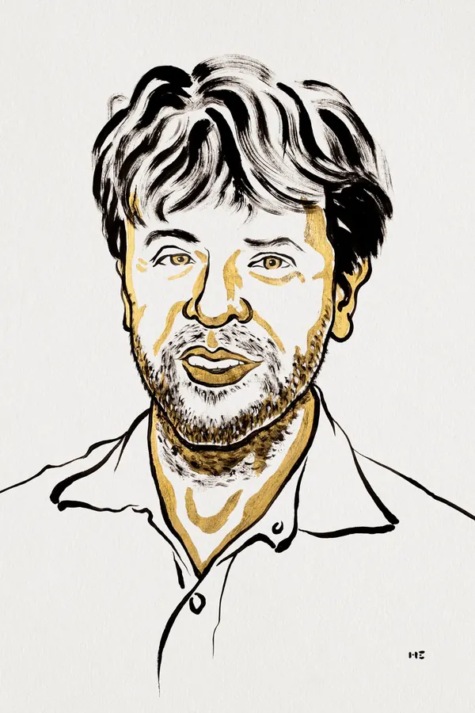
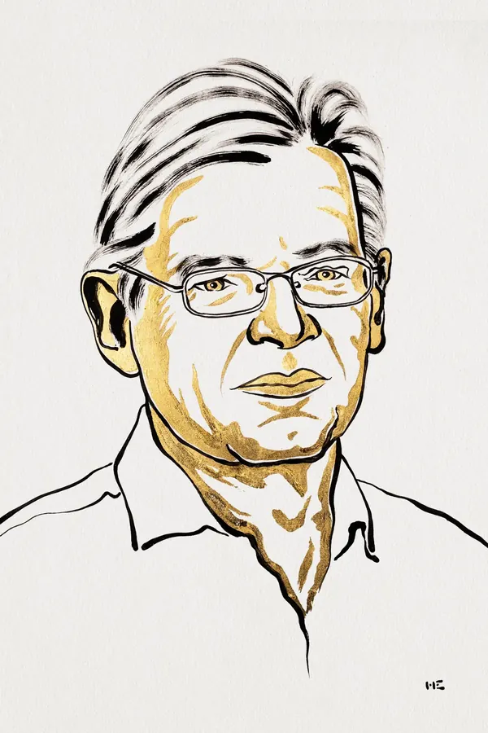
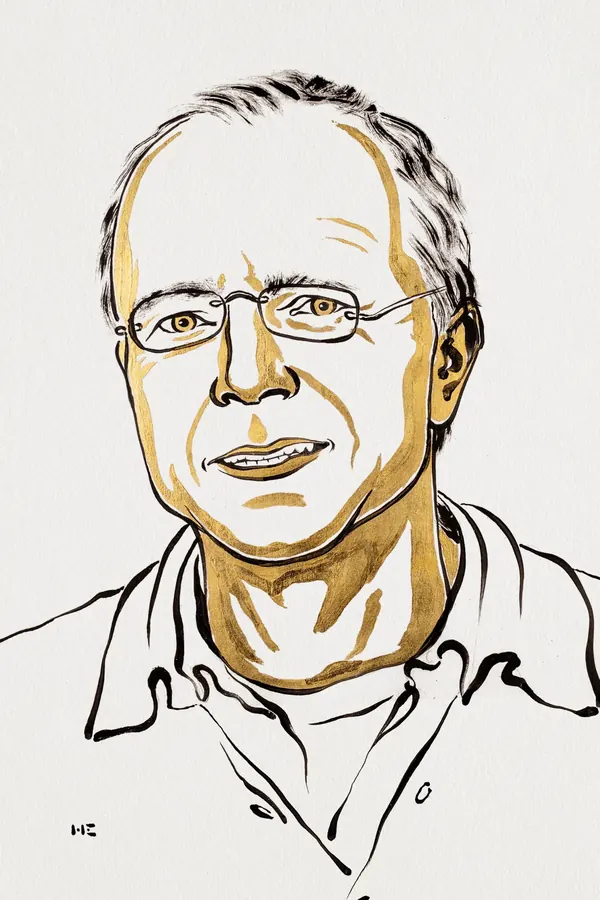
Key numbers关键数字
Official video官方影像 · 得主本人怎么说
Videos are hosted by the Nobel Prize on YouTube; the same interviews are also on nobelprize.org (linked under Sources) with full transcripts. YouTube 在中国大陆需要国际网络环境才能播放；官方页面上的访谈文字稿不受影响。
Glossary术语小词典（10 条 · 面向中学生）
Terms are the ones used by the Nobel Prize sources; the plain-language explanations and analogies are written by this site (marked 本站解释).
- 神经细胞（神经元）nerve cell / neuron
- 大脑和神经系统里的基本工作单元，靠电信号和化学信号传递信息。成年人的大脑里大约有 900 亿个。本站解释像一张城市里密密麻麻的道路网，每个路口（细胞）都往外伸出成千上万条线。
- 离子通道ion channel
- 细胞表面上的一种「门」，打开后带电的离子就能流过去，于是产生电信号。本站解释像大坝上的闸门：闸门一开，水（离子）就冲过去，下游的水轮转动，也就有了「电」。
- 光门控离子通道light-gated ion channel
- 今年诺贝尔奖的授奖理由用的就是这个说法：一种被光直接控制的离子通道——不用经过一长串化学反应，光照上去，门就开。本站解释普通的门要用钥匙、要经过好几道手续；光门控通道是「感应门」：光一照，立刻开。
- 通道视紫红质-2channelrhodopsin-2（ChR2）
- 从衣藻身上找到的那个蛋白：既能捕光，自己又是个离子通道。黑格曼和纳格尔发现，戴瑟罗斯把它送进了神经细胞。本站解释一件把「光敏传感器」和「闸门」装在同一个壳里的器件——这正是它比人眼快二十多倍的原因。
- 光遗传学optogenetics
- 用光来控制特定类型神经细胞活动的一整套方法。名字出现于 2006 年。它是被授予今年诺贝尔奖的「那件工具」。本站解释像给大脑装了一排可以单独开关的灯：不碰别的，只把想研究的那一类细胞点亮或关掉。
- 眼点eyespot
- 衣藻细胞表面一个橘色小点，里面装着捕捉光的分子，是它的「眼睛」。本站解释比不上一只眼睛，更像一个光电门传感器——只负责知道「哪边亮」。
- 半毫秒 / 0.2 毫秒0.5 ms / 0.2 ms
- 0.5 毫秒＝千分之零点五秒。衣藻从感光到出电信号只要 0.5 毫秒；通道视紫红质-2 打开通道只要 0.2 毫秒。作为对比，人眼同类过程至少要 10 毫秒。本站解释你眨一次眼大约 100 毫秒——衣藻完成一整套反应，用的时间不到你眨眼的二百分之一。
- 模式生物与蛙卵model organism / frog egg
- 研究蛋白常用的一招：把基因注射进非洲爪蟾的卵细胞，让卵大量生产这种蛋白，再来测它怎么工作。本站解释像一个通用插座：不管插进去的是哪国的电器，只要电压对，就能看出这个电器怎么工作。
- 记忆痕迹（engram）engram
- 记忆形成时，脑子里被写下的那组特定神经细胞与通路。2012 年研究者能把它「按下去」并让小鼠表现出一段当时的恐惧。本站解释像把一件事录进硬盘时留下的那一小片存储区——找对了位置，就能把它重新播放出来。
- 临床试验clinical trial
- 在人体上验证一种方法是否有效、是否安全的正式研究。视网膜色素变性的光遗传学治疗就处在这一步。本站解释实验室里跑通 ≠ 能给人用；临床试验就是从「实验室」走到「病床」之间的那段路。
Think about it想想看（5 问）
No answers are given here on purpose — every question can be answered from the official pages linked below.
- 克里克想用光来控制神经细胞，而不是用电。为什么「快」这件事在这里这么关键？（提示：神经信号本身有多快，0.5 毫秒这个数字说明了什么）
- 一个单细胞藻类身上的感光蛋白，为什么放进大鼠的神经细胞、人的肾细胞里照样能工作？这件事本身告诉了你什么？
- 黑格曼分离蛋白失败了很多年，最后是怎么解决的？为什么「别人把衣藻基因组公开」会成了他的转机？
- 知道「哪一类神经细胞管哪一种行为」，对治疗精神疾病有什么用？光遗传学目前在临床试验里治的是什么病？
- 一项技术从「在培养皿里成功」到「用在病人身上」，中间隔着哪些东西？（提示：2003 → 2005 → 2007 → 2012 → 临床试验的时间线）